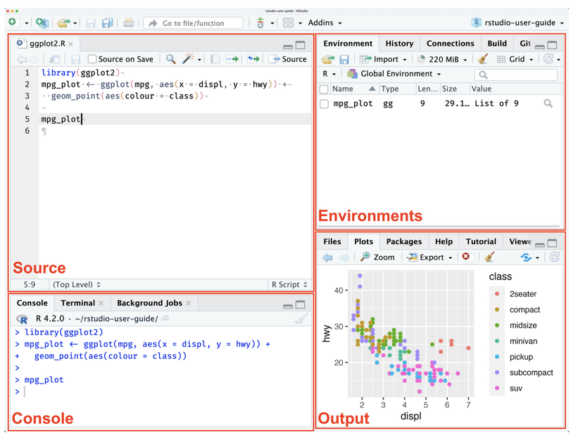

The session focuses on a practical introduction to the calculation and interpretation of bioactivity similarity, with visual outputs (i.e. step 3 in the overall grouping workflow)
The training will use existing code developed by Michabo Health Science Ltd, and run within R (and R studio) which should be installed on the trainees local computer.
Working individually or in pairs, attendees will self-pace their progress through the training material and example data provided.
The tutorial should be followed from the link below:
Data is downloaded as we go through the tutorial. However all the materials including code and and data is available on Github as well:
The training has five stages
R (and R Studio) with the majority of the packages should already be pre-installed on all the trainees computers.
See below for a reminder of the different panels will be using in R Studio today
